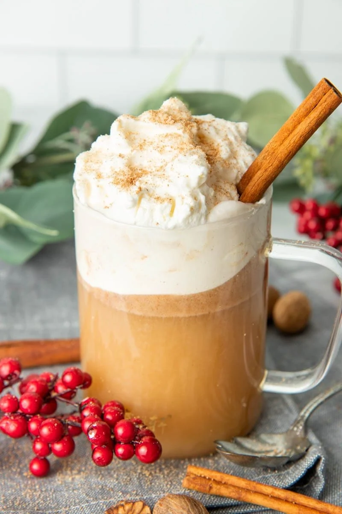

Hot Buttered Rum is a warm mixed drink made with a combination of rum, butter, sweeteners, either hot water or cider, and a selection of warming spices such as nutmeg, cinnamon, and cloves. To prepare it, butter, sugar, and spices are typically placed into an Irish coffee glass or a mug, then muddled. Rum is then added to the combination, and the whole thing is topped with hot water before stirring. The beverage is especially popular during fall and winter, and it is traditionally associated with festive seasons. Hot Buttered Rum’s history can be traced back to the colonial days – in the 1650s, Jamaica started to import molasses to Colonial America, and people in New England began to open distilleries where rum was added to hot beverages, creating this comforting beverage in the process.
Meal prep time : 10 minutes
Servings : 1